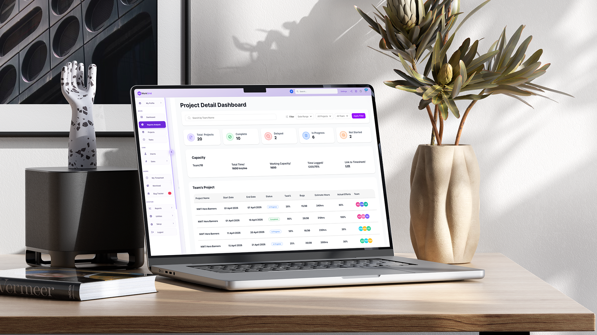
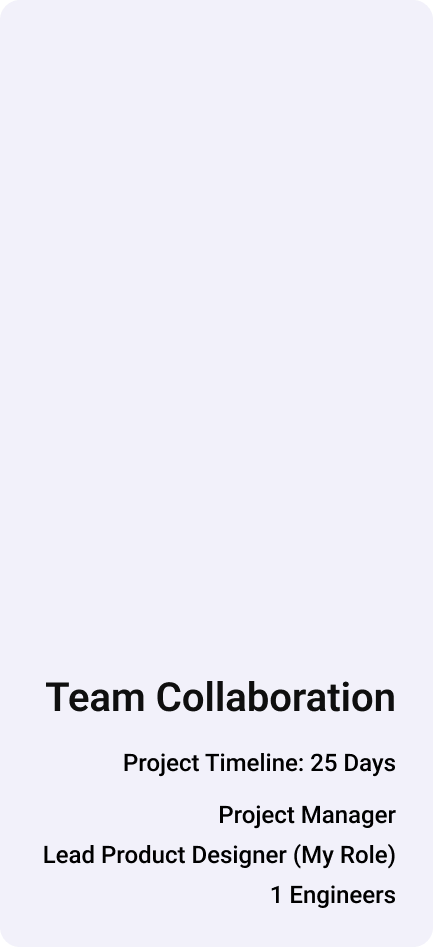
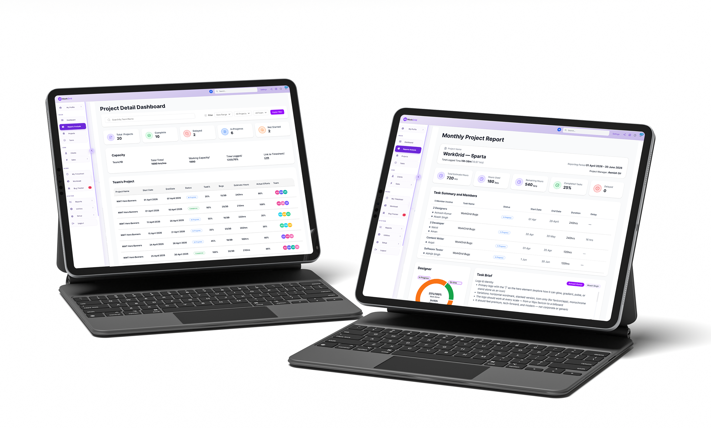
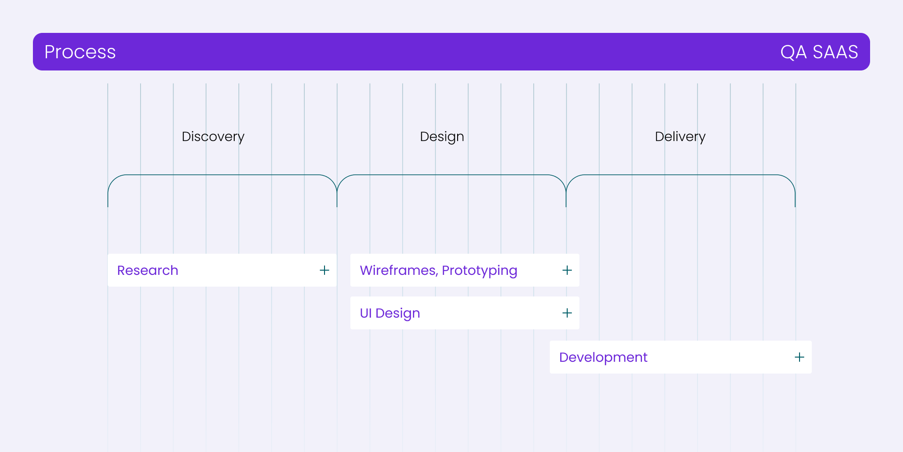
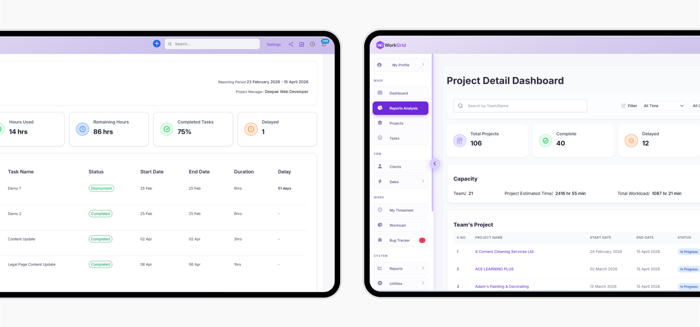
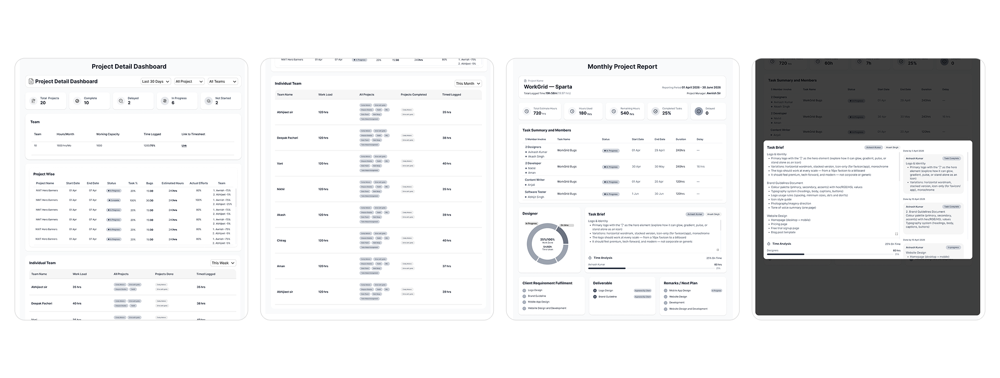
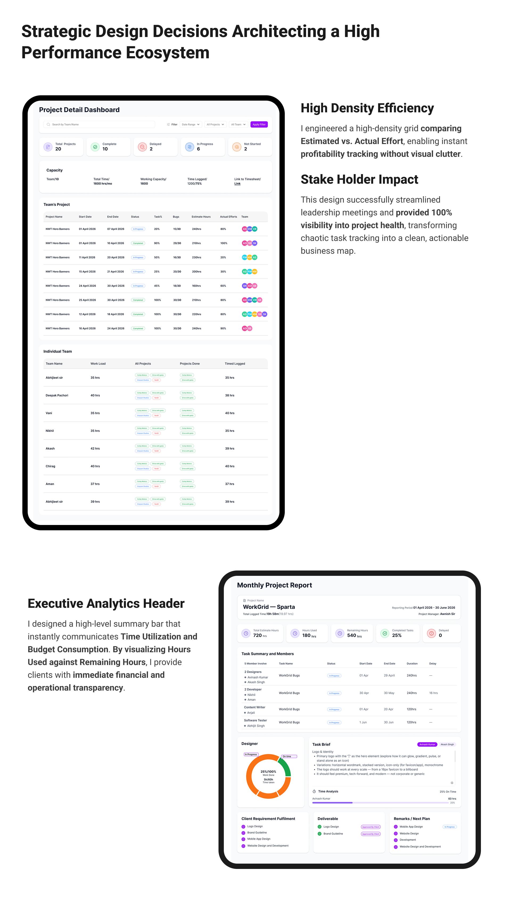
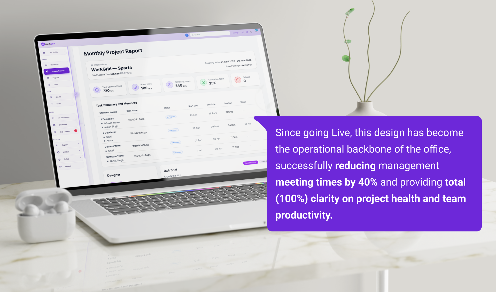

I designed a centralized Project Intelligence Module for Work Grid, a
comprehensive task management platform. The goal was to eliminate
high level blind spots for management by providing 100% visibility
into project health, resource allocation, and delay analytics.
The management team lacked a bird's-eye view of office productivity. Tracking multiple projects across different teams was chaotic.
Problem: Managers couldn't see why projects were delayed or who
was specifically responsible for which part of a group task.
Project Health: On-time vs. Delayed status.
Resource Depth: Individual contributions within group projects.
Time Analytics: Time spent vs. remaining time vs. original deadlines.



In this project, research was conducted through high intensity Collaborative Discussion Sessions.
I worked closely with a core group of 10 key stakeholders, including the Manager and Team Leads.
My role was to filter diverse opinions into a single, logical framework. Through constant
dialogue,
we
identified that the Reason for Delay was the most critical data point missing from
current tools..

Before moving to high-fidelity, I focused on Information Architecture.
We went through multiple rounds of wireframe feedback. We stripped away unnecessary clutter, ensuring that even with high data density, the manager could find key information in under 3 seconds.
We iterated specifically on the Group Project View to show the hierarchy of tasks without making the screen feel overcrowded.

Once the logic was mapped, I transitioned into High-Fidelity Design, focusing on high information density and functional precision. I engineered a sophisticated AI Analyst Module that goes beyond data storage to provide deep semantic understanding of every interaction

By automating status updates through the dashboard, we eliminated the need for manual status-check meetings, saving leadership roughly 5 hours per week.
Replaced scattered manual tracking with a centralized system, resulting in zero blind spots regarding project delays or resource allocation.
With real time Time Consumed vs. Remaining tracking, the team saw a significant increase in hitting original project milestones.
Successfully mapped workloads for the entire core team, ensuring 100% resource visibility and preventing burnout through balanced task distribution.
